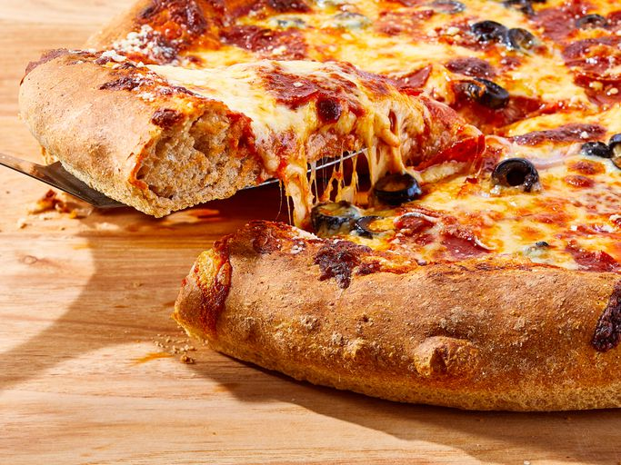

Pizza Recipe

Description
This whole wheat pizza dough recipe bakes up into an amazing crust that's crisp on the outside and soft and chewy on the inside. Use with your favorite pizza toppings or pizza recipe.
Ingredients
- 1,5 cups warm water (110 degrees F/45 degrees C)
- 1 teaspoon white sugar
- 1 tablespoon active dry yeast
- 1 tablespoon olive oil
- 1 teaspoon salt
- 2 cups whole wheat flour
- 1,5 cups all-purpose flour
Steps
- Pour warm water into a large bowl; stir in sugar to dissolve. Sprinkle yeast on top and let stand until foamy, about 10 minutes.
- Stir olive oil and salt into yeast mixture; mix in whole wheat flour and 1 cup all-purpose flour until dough starts to come together.
- Turn dough out onto a surface floured with remaining all-purpose flour; knead until all of the flour has been absorbed and dough becomes smooth, about 10 minutes.
- Place dough in an oiled bowl and turn to coat the surface. Cover loosely with a towel; let stand in a warm place until doubled in size, about 1 hour.
- Turn dough out onto a lightly floured surface; divide into 2 pieces for 2 thin crusts, or leave whole to make one thick crust.
- Form dough into a tight ball; place dough back into an oiled bowl and turn to coat the surface. Cover loosely with a towel; let stand in a warm place until doubled in size, about 45 minutes.
- Grease a large pizza pan. Roll a ball of dough with a rolling pin until it will not stretch any further. Then, drape it over both of your fists, and gently pull the edges outward, while rotating crust. When the circle has reached the desired size, place on the prepared pizza pan.
- Bake with sauce, cheese and toppings.